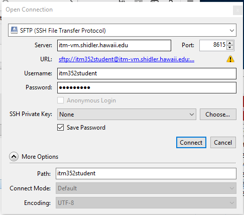

There really is no difference between the web server such as one you might install on your laptop for class and any other web server on the internet. It’s really a matter of accessibility. A local web server is accessed though the URL http://localhost where localhost is always set to the IP address 10.0.0.1 (which is also known as the “local loopback”). Anytime you try to connect to localhost you will always be connecting to your own machine. So if you set your web server’s address to be localhost it then can only be accessed from your machine regardless if it is connected to the internet (or any network). A global web server simply has it’s address set to some globally accessible IP address (and possibly an internet registered domain name).
You should always develop your web applications locally and then “publish” them after careful testing to a global web server (that is if you want the outside world to be able to access it). For our class we have made available to you the global web server http://itm-vm.shidler.hawaii.edu/itm352 and this is where you should test all your applications if they are intended to be used non-locally.
Create a plain textfile using VS Code or your favorite text editor (notepad, FrontPage, etc.) and create a new webpage.
Save the file to your XAMPP htdocs directory (for example on the mac it may be /Applications/XAMPP/xamppfiles/htdocs) and call it: <your first name>_hello.htm. NOTE: On the mac you may need to set the permissions on the htdocs directory to read/write for all.
Type in “an HTML hello from
In your browser, directly access the using the URL file:<XAMPP htdocs>/<your first name>_hello.htm For example, file://Applications/XAMPP/xamppfiles/htdocs/Port_hello.htm NOTE: The htdocs path will look different on the PC
Now access the file through your local web server typing in http://localhost/<your name>_hello.htm
Locate the html file you created to test your local web server
See http://www.hawaii.edu/askus/692 for more information on SSH/sFTP
http://itm-vm.shidler.hawaii.edu/itm352student/<your class section>/<your name>_hello.htm For example http://itm-vm.shidler.hawaii.edu/itm352student/Port_Section1/Port_hello.htmIf you are using Cyberduck here is what your open connection should look like this:
